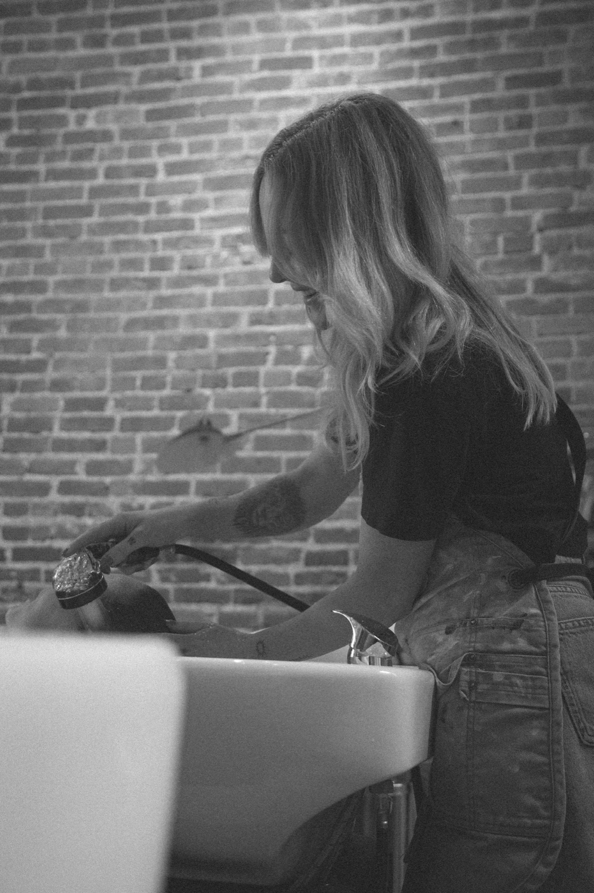
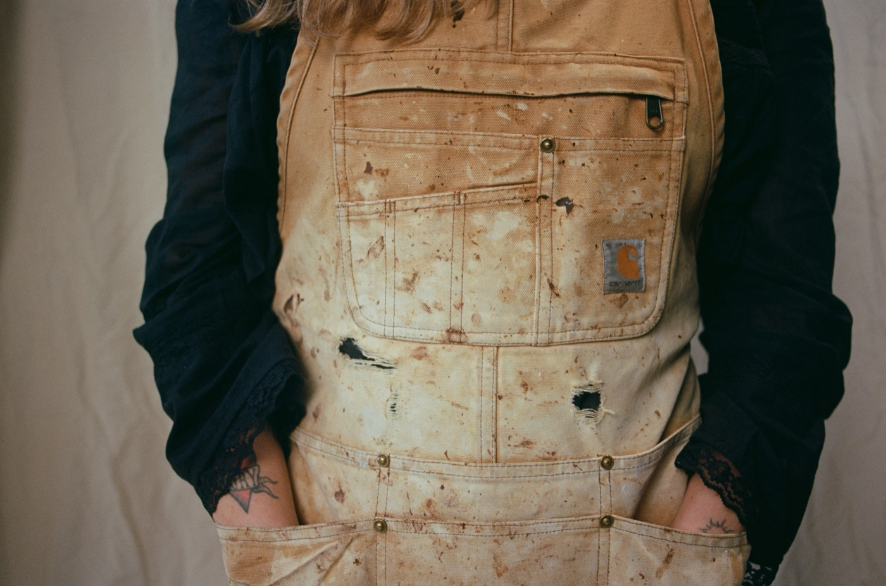

Cincinnati Hair Color & Blonding
Lived-in color, Blake's specialty.
Soft, dimensional blonding and color that grows out beautifully — blended and glossed by Blake, and finished with vegan, low-tox color.


Blonding & Highlights
Full and partial highlights and balayage for brightness and dimension, tailored to your hair and your lifestyle.
Lived-In Color & Root Melts
Color retouches and root melts that blur regrowth, so your color grows out softly and stays easy to maintain.
Glossing & Treatments
Glosses for shine and tone, plus conditioning treatments to keep color healthy and bright.
Vegan, Low-Tox Color
The same vegan, cruelty-free, low-tox standard Free Hair Salon uses in every service.
Color FAQ
What to know before you book
How much does hair color cost at Free Hair with Blake?
Pricing depends on timing, hair density, and the amount of color used, and varies by service — highlights, retouches, root melts, and glosses are each priced separately, and transformative color is billed at an hourly rate. See the price list for current starting prices.
What is lived-in color?
Lived-in color is soft, dimensional color blended so it grows out gradually instead of leaving a harsh regrowth line — techniques like balayage and root melts keep it looking effortless between appointments.
Is the color vegan and low-tox?
Yes — Free Hair Salon uses vegan, cruelty-free, low-tox products throughout every service, including color.
How do I keep my color healthy at home?
Use a water filter on your shower, plus the vegan, clean products Blake trusts. You can find her picks on the products page.
Is Free Hair Salon eco-friendly?
Yes — Free Hair Salon is a certified Green Circle Salon, recycling and recovering up to 95% of its beauty waste.